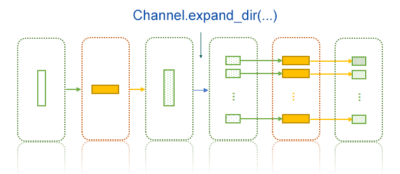

Channels
Channels are used to pass data from one process to another. It is actually a pandas.DataFrame object, where each column corresponds to an input key and each row corresponds to a job.
The values for different variables in different jobs wil be:
| Job Index | v1 | v2 | v3 |
|---|---|---|---|
| 0 | a1 | b1 | c1 |
| 1 | a2 | b2 | c2 |
| ... | ... | ... | ... |
With a process definition:
class MyProcess(Proc):
input = "v1, v2, v3"
input_data = df # The above data frame
Then:
| Job index | Template | Rendered to |
|---|---|---|
| 0 | {{in.v1}} |
a1 |
| 0 | {{in.v2}} |
b1 |
| 0 | {{in.v3}} |
c1 |
| 1 | {{in.v1}} |
a2 |
| 1 | {{in.v2}} |
b2 |
| 1 | {{in.v3}} |
c2 |
| ... | ... | ... |
The column names don't have to match the exact input keys. If pipen finds any of the input keys present in the data, just use them. However, if any input keys cannot find in the data frame, we will use the first couple of columns.
For example:
class MyProcess2(Proc):
input = "v4, v3"
input_data = df # The above data frame
The for job#0, {{in.v4}} will be rendered as a1 (using column v1 in the data), and {{in.v3}} as c1 (using column v3).
Creating channels
Since channels are just data frames, so whatever creates a pandas data frame, can be used to create a channel. Besides, a couple of class methods are avaible to create channels:
-
Channel.create(...)This takes a list of values to create a channel. If a data frame is passed, will return that data frame.
If each element in the list is a tuple, the list is used to create a data frame directly, just like:
from pandas import DataFrame ch = Channel.create([(1,2), (3,4)]) # ch = DataFrame([(1,2), (3,4)]) # 0 1 # <int64> <int64> # 0 1 2 # 1 3 4If each element is not a tuple (even it is a list), it is converted to tuple:
ch = Channel.create([1, 2]) # equvalent to: # ch = Channel.create([(1, ), (2, )])The
input_datais passed to this class method to create the input channel. -
Channel.from_glob(...)This takes a glob pattern to match the files to create a single-column channel.
You can also filter the types of files by
ftype: -any: to match any files (default) -link: to mach any links -dir: to match any directories -file: to match any filesYou may also sort the files using
sortby: -name: sort the files by their basename (default) -mtime: sort the files by their last modified time -size: sort by file sizeWhen
reverseis True, the above sortings are reversed. -
Channel.from_pairs(...)Like
Channel.from_glob()but create a double-column channel. -
Channel.from_csv(...)Uses
pandas.read_csv()to create a channel -
Channel.from_excel(...)Uses
pandas.read_excel()to create a channel -
Channel.from_table(...)Uses
pandas.read_table()to create a channel
Builtin verbs/functions to transform channels
pipen uses pipda to create some verbs/functions to transform channels, so that you can use them with piping syntax:
channel >> verb(...)
Expanding a channel by directory: expand_dir()
Sometimes we prepare files in one process (for example, split a big file into small ones in a directory), then handle these files by different jobs in another process, so that they can be processed simultaneously.

For example:
class P1(Proc):
# the original file: a.txt
input = "infile:file"
input_data = ["a.txt"]
output = "outdir:dir:outdir"
script = "# the script to split a.txt to 1.txt, 2.txt, 3.txt ... to {{out.outdir}}"
class P2(Proc):
requires = P1
# expand channel [("outdir/a/",)] to channel:
# [("outdir/a/1.txt",), ("outdir/a/2.txt",), ("outdir/a/3.txt",), ...]
input = "infile:file"
input_data = lambda ch: ch >> expand_dir(pattern="*.txt")
# outfile: 1.result, 2.result, ...
output = "outfile:file:{{in.infile.split('/')[-1].split('.')[0]}}.result"
script = """
# work on {{in.infile}} (1.txt, 2.txt, 3.txt, ...)
# to result file {{out.outfile}} (1.result, 2.result, 3.result, ...)
"""
# Run 3 jobs in a batch simultaneously
Pipen(forks=3).run(P1)
If the channel is a multi-column channel, you can also specify col to expand only on that column, values of other columns will be copied to the expanded rows/jobs.
You can also filter and sort the expanded files using arguments ftype, sortby and reverse, just like when we use Channel.from_glob(...)
Caution
expand_dir(...)only works for single-row channels, which will be expanded toN(number of files included). If original channel has more than 1 row, only first row will be used, and other rows will be ignored.- Only the value of the column to be expanded will be changed, values of other columns remain the same.
Collapsing a channel by files in a common ancestor directory: collapse_files(...)
It's basically the reverse process of expand_dir(). It applies when you deal with different files and in next process you need them all involved (i.e. combine the results):

For example:
class P1(Proc):
input = "infile:file"
input_data = ["/a/b/1.txt", "/a/b/2.txt", "/a/b/3.txt"]
output = "outfile:file:{{in.infile.split('/')[-1].split('.')[0] | append: '.txt2'}}"
script = """
# the script to deal with each input file:
# {{in.infile}} -> {{out.outfile}}
"""
class P2(Proc):
requires = P1
# collapse channel [("<outdir>/1.txt2",), ("<outdir>/2.txt2",), ("<outdir>/3.txt2",)]
# to channel: [("<outdir>/", )]
input = "indir:file"
input_data = lambda ch: ch >> collapse_files()
output = "outfile:file:{{in.indir.split('/')[-1]}}.result"
script = """
# combine 1.txt2, 2.txt2, 3.txt3 in {{in.indir}} to {{out.outfile}}
"""
Pipen().run(P1)
Similarly, if we have multiple columns, you may specify the column by index or name to collapse by:
ch >> collapse_files(col=...)
Caution
os.path.dirname(os.path.commonprefix(...))is used to detect the common ancestor directory, so the files could be['/a/1/1.file', '/a/2/1.file']. In this case/a/will be returned.- values at other columns should be the same. They will NOT be checked! The values at the first row will be used.